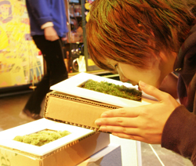

organism, tactile, generative, theoretical tool, method, device, local, global interface "The moss plant earns our respect, even our sense of awe, as one of the worlds lengthier successes in the business of living" (George Schenk, Timberpress, 1997).
An investigation of the topological characteristics of moss.
The unique botanical features of moss qualify as a background for the analysis ofphenomena which require a topological approach. The characteristics of the growth process are: 1. Territorial growth of genetically identical clusters. 2. Mutual support of the
plantlets of one cluster. 3. Clusters have a layered structure. Illustations are by Ingela Viks.
Abstract THE PROJECT´S BACKGROUND
The submitted project was originally developed for the MobLab project, initiated by Yukiko Shikata and taking place in Japan from October 15 to November 6 (www.moblab.org). MobLab (Mobile + Laboratory) was a project with young artists from Japan and Germany. Seven participants (including the author) travelled Japan in a converted and technologically augmented bus to explore the use of mobile digital technology for their artistic practice. MobLab was framing individual projects from various creative fields which are dealing with the conditions and possibilities of production and presentation opened up by a mobile environment in its broader sense. MobLab (but you can take any environment here within the paradigm of mobility and net-architecture) can be seen as a project to join different LAYERS OF SPACE, TIME AND CULTURAL PRODUCTION. Inspired by Japanese garden culture moss served as the trajectory to cut and research these manifold cultural, spatial and temporal layers. The plant provided a specific background to contemplate and to reflect on the mutual impact of technology and nature on contemporary societies. In the course of the project interviews have been conducted, research in botanics has been done and an installation was built at several sites. Please have a look at the blog page dedicated to the project on: http://moblab.org/blog/stefan/. Please browse the contemporary moss sections here. Let me lay out the crucial elements of the project which shall be elaborated on the poster now. THE CHARACTERISTICS OF MOSS TERRITORIAL GROWTH
Unlike most other plants moss is growing in CLUSTERS, CUSHIONS AND LAYERS. It never comes as a single plant, although one cushion is referred to as "one moss". Where it is growing it is defining an area or a territory instead of a single point. ENDLESS GROWTH
Mosses are growing ENDLESSLY. They don´t have real roots. Mosses die at the bottom and grow at the top. The plant is growing and splitting further to the top. Basically all plants are therefore connected on a deeper level. This way they are getting more and more dense at the top, one plant next to another. You end up with single plants growing very close to each other, just as a lawn of moss. This also means that a great number of moss plants which seem to be separate can emerge from a single moss plant over time. But actually it is a CLONE, one identical moss. However at the bottom the plants are dying and slowly turning into humus. That way they are growing upon their self-made layer of humus. MUTUAL SUPPORT
Mosses don´t have a supporting tissue. By growing densely one to another that mutually support each other. Furthermore mosses don´t have any possibility for water transport in their stalk. This means they need to be close to another in order to obtain the effect of a sponge. The capillary effect emerges BETWEEN the plants. Water, the most important essence for any living organism is accumulated between the single plants. SLOWNESS
Moss is one of the oldest plants inhibiting our planet and in turn old things are said to be moss-covered. Due to its very slow growth it is a strong metaphor for the passing of time in many cultures. VIRTUALLY moss is regarded as a static entity. However, (biologically) it is alive. Its culturally defined metaphorical incorporation of time and virtually eternal life is was puts it in close relation to the virtual eternity of so called "cyber-spaces" (you know what i mean!? ;). URLS:
contemporary moss blog for moblab moblab project page |